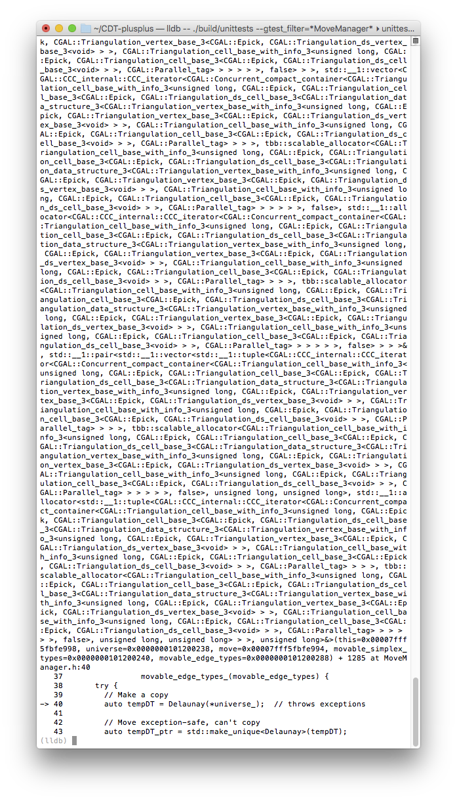
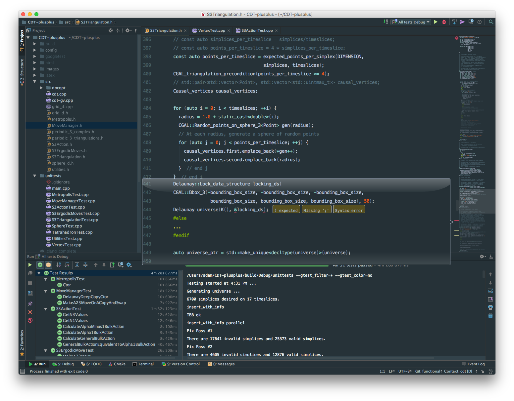
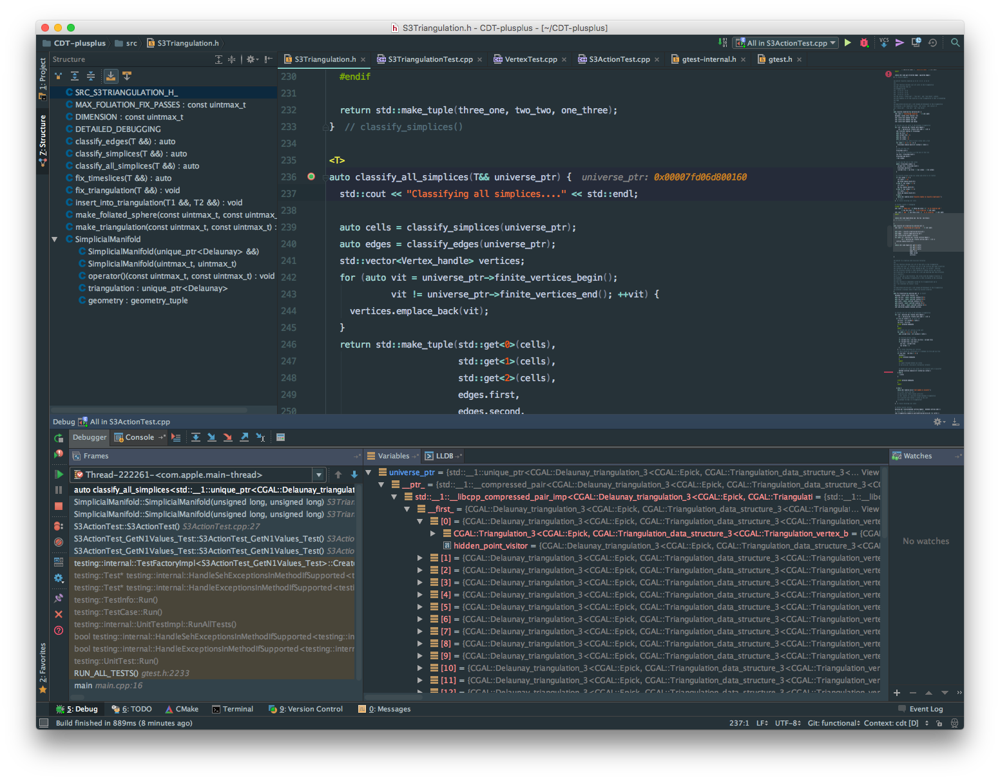

Today I decided to give CLion a try. I need all the help I can get.
(I also should mention that JetBrains generously gives free CLion licenses to students, teachers, and non-commercial open source projects.)
Atom is very nice, and I’ve been using it since 0.1 for everything from \(\LaTeX\)ing papers to writing this blog to everyday coding. However, my latest travails involve heavy use of the debugger, and doing so with heavily templated code on the command line is not so nice.

So I was lured in with the promise of a nice, graphical debugger in an honest IDE.
After tinkering around with it for an hour or so, and trawling through the forums, I’ve managed to get CLion to look very close to my Atom setup, except for the different syntax highlighting colors. But I’ll get used to that, or I can always customize the color scheme to Atom’s material syntax if it really bothers me.
Pros:
- Code completion is nice.
- Refactoring is wonderful. Also, CLion is smart enough to point out things you don’t need, such as .gitignore items covered by other definitions. In general, CLion seems to have a lot of best practices baked right in.
- It’s really nice to be working with a tool that understands the C++ constructs, instead of just doing some clever pattern matching.

Cons:
- No option to use Ninja as my build tool. This increases build times perceptibly (but a hack exists).
- Inexplicably builds in some hidden directory instead of the output directory (but see the roadmap for 2016.2).
- The debugger skips right past my set breakpoints.
Sadly, the last two are pretty much dealbreakers.
I’ve submitted a support request, and I really think that CLion 2016.2 looks very promising.
But as of now I’ll still be writing/coding in Atom.
UPDATE 2016-04-25
Debugging works now, it’s reportedly an issue with symbolic links in the project path, and improvements are expected in the next version. I’ve configured Run/Debug so that GoogleTests are pleasant to use, as is the VCS GitHub integration. CLion has replaced my Atom/Terminal/GitHub Desktop trifecta; I’m pretty comfortable coding in CLion now, and don’t really want to go back.
